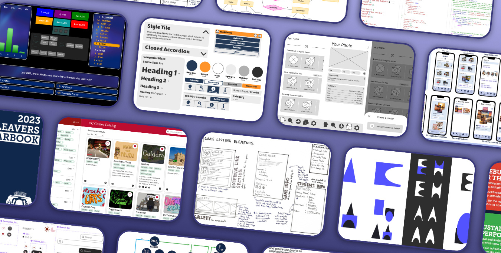

Hi, I'm Ross
I'm a student currently studying Digital Product Design at the University of Canterbury since 2024. My focus is in areas of human interaction, UI/UX and web development.
Solving problems centred around human needs and real-world challenges is what I love. When I'm not exploring new methods and technologies to form solutions, working on projects that seek to address human-first challenges are the sort of issues I believe are worth exploring.
Front-end web design and development is my primary strength- but I prefer to take an approach that places users at the centre rather than computers. Using the right technologies or software is only half the challenge, developing systems and interfaces that are forward-thinking and human-first is the other.